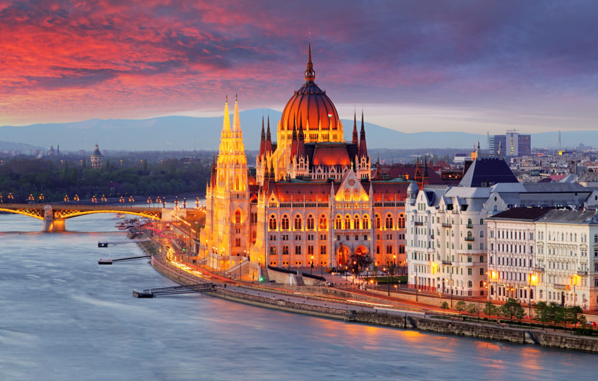
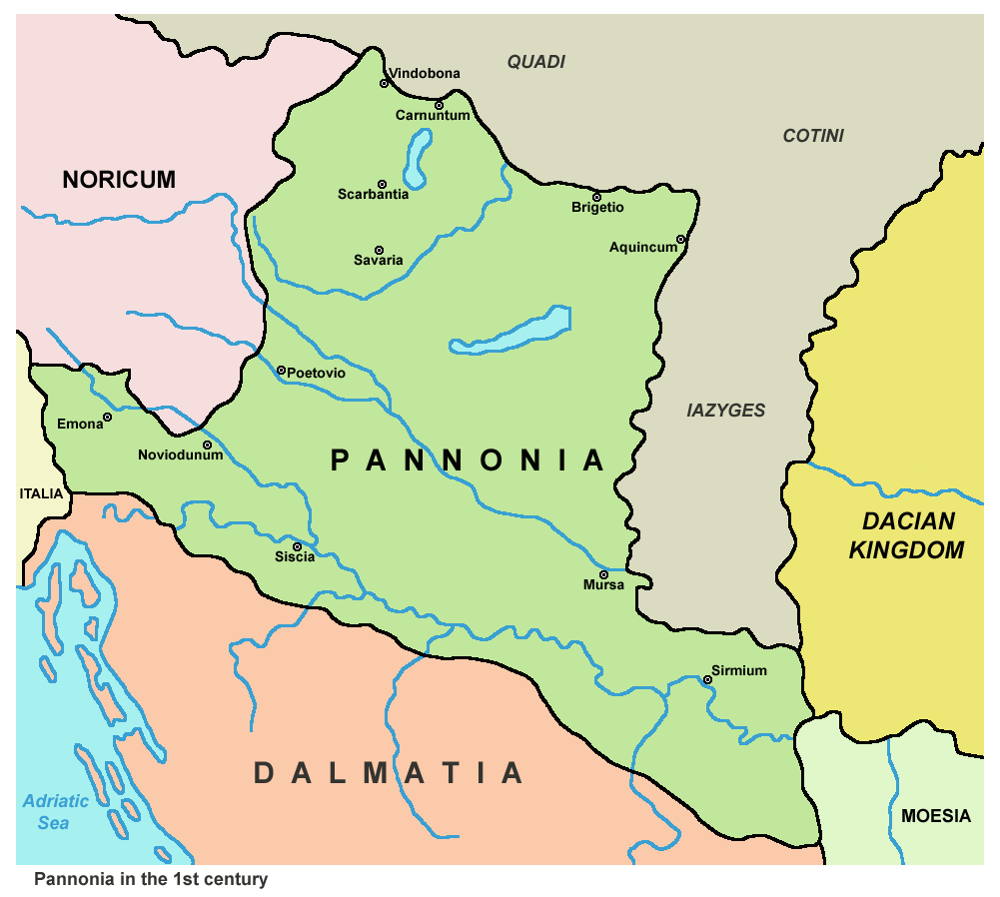

Budapest è la capitale e la
maggiore città dell'Ungheria. Amministrata come un comune autonomo, costituisce inoltre il centro primario
del Paese per la vita politica, economica e culturale; all'inizio del 2019 contava 1 752 286 abitanti,
mentre la popolazione residente nell'area metropolitana ammonta a più di 3 000 000 di persone.
Budapest nacque ufficialmente nel 1873 dall'unione delle città storiche di Buda e Óbuda, ubicate a ovest del
Danubio, con l'abitato di Pest, situato sulla riva opposta del fiume e anch'esso di antiche origini; fino al
1918 fu una delle due capitali dell'Impero austro-ungarico, dissoltosi al termine della prima guerra
mondiale.
Nel XXI secolo Budapest è diventata una metropoli globale e si è affermata come una
popolare destinazione turistica: nel 2019, secondo i dati forniti da Euromonitor International, la capitale
ungherese è stata la 62ª città più visitata del mondo.

Il primo insediamento sul territorio di Budapest fu intorno al I secolo a.C. a opera dei Celti. In seguito venne
occupata dai Romani. L'insediamento romano, Aquincum - che soppianta il celtico Akink - divenne la principale
città della Pannonia inferiore. Dell'epoca romana restano un insediamento civile e uno militare, ciascuno con un
anfiteatro, terme, mitrei, un acquedotto, alcune ville e numerosi castra di presidio del limes danubiano.
Le tribù ungheresi vi arrivarono nel corso del X secolo e ne fecero una delle sedi prima dei principi e poi dei
re. In quell'epoca la città si chiamava Buda.
Sulla riva opposta del Danubio fu fondata Pest. Già luogo di una certa importanza, venne ricostruita velocemente
dopo la distruzione a opera degli invasori Mongoli nel 1241, ma fu Buda, sede del Palazzo Reale sin dal 1247, a
diventare la capitale dell'Ungheria.
La conquista da parte dei Turchi di gran parte dell'Ungheria nel XVI secolo interruppe la crescita della città:
dopo la battaglia di Mohács Pest cadde in mano agli invasori nel 1526 e Buda la seguì quindici anni più tardi.
Mentre Buda rimase la sede del governo turco Pest finì in rovina prima della riconquista nel 1686 da parte delle
truppe asburgiche.
Fu Pest, dal 1723 sede amministrativa del regno, a conoscere tra il XVIII e XIX secolo il maggior tasso di
crescita, anche grazie all'inglobamento di centri abitati adiacenti. Nel 1800 Pest era più grande di Buda e
Óbuda messe insieme e nel corso del secolo crebbe di venti volte fino a raggiungere i 600 000 abitanti.
La fusione delle tre città di Buda, Óbuda e Pest in un'unica amministrazione, dapprima messa in atto dal governo
rivoluzionario ungherese nel 1849, poi revocata dalla restaurata autorità asburgica, venne infine resa effettiva
dal governo autonomo ungherese instaurato con il compromesso austro-ungarico del 1867. La popolazione totale
dell'area unificata crebbe tra il 1840 e il 1900 fino a 730 000 abitanti.
Durante il XX secolo la maggiore espansione demografica avvenne nei sobborghi, con Újpest che più che raddoppiò
le sue dimensioni dal 1890 al 1910 e Kispest che le quintuplicò dal 1900 al 1920, a causa del fatto che la gran
parte delle industrie del paese si concentrarono nella città. Le perdite umane della prima guerra mondiale e
quelle conseguenti alla perdita di due terzi del territorio del paese causarono un temporaneo
rallentamento, lasciando Budapest capitale di uno Stato più piccolo ma finalmente sovrano.

Nel 1930 la città
giunse a contare un milione di abitanti, più altri 400 000 nei sobborghi. In quegli anni uno dei quotidiani a
più larga diffusione era il Budapesti Hirlap, giornale nazionalista e conservatore che cessò le pubblicazioni
nel 1939.Durante l'occupazione tedesca della seconda guerra mondiale più di un terzo dei 250 000 abitanti di origine
ebraica di Budapest persero la vita nell'Olocausto. La situazione si fece drammatica soprattutto tra
l'ottobre 1944 e l'inizio del 1945 quando i nazisti e la polizia ungherese deportarono 76 000 degli ebrei di
Budapest nei campi di
concentramento e sterminio, forzando il resto della popolazione ebraica all'interno del ghetto di Budapest e
sottoponendola a numerosi eccidi. A contrastare eroicamente le uccisioni e le deportazioni si distinsero il
diplomatico svedese Raoul Wallenberg, quello svizzero Carl Lutz, l'italiano Giorgio Perlasca e il nunzio
apostolico Angelo Rotta. Nonostante l'enorme massacro Budapest è
ancor oggi la città europea con la maggior percentuale di popolazione ebraica.

La città, danneggiata gravemente durante l'assedio sovietico dell'inizio del 1945, fu ricostruita nel
dopoguerra. Nel 1956 la città fu uno dei maggiori teatri della rivolta d'Ungheria e dei conseguenti scontri tra
la popolazione e le truppe sovietiche, che portarono alla sconfitta degli insorti e alla repressione. Negli anni
sessanta la capitale divenne in qualche modo una vetrina delle politiche più pragmatiche intraprese dal governo
del Paese dopo i fatti del 1956. Dopo la caduta del regime comunista Budapest ha riallacciato i suoi
tradizionali legami economici e culturali con l'Europa occidentale, ponendosi come capofila nel tumultuoso
passaggio al capitalismo dei Paesi centro europei ex socialisti. A partire dagli anni novanta, seguendo una
linea di tendenza comune a tutta l'Ungheria, Budapest ha subito un calo demografico causato dall'emigrazione e
dalla decrescita naturale della popolazione.